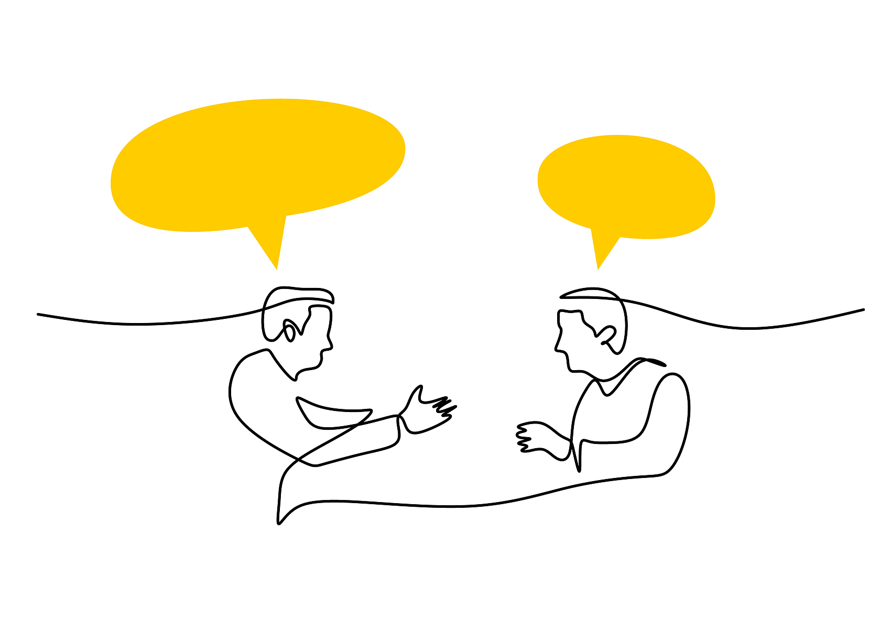
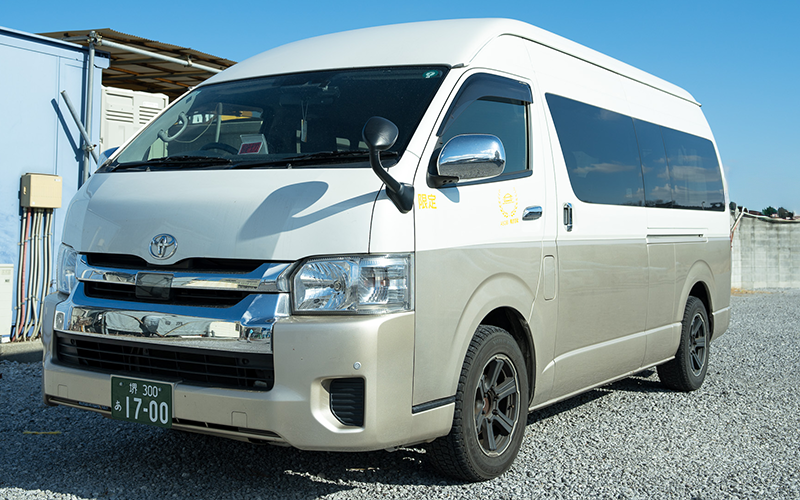
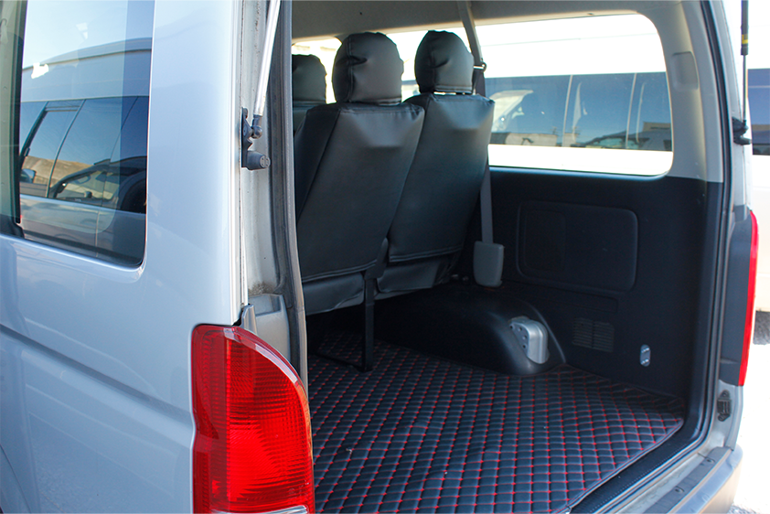
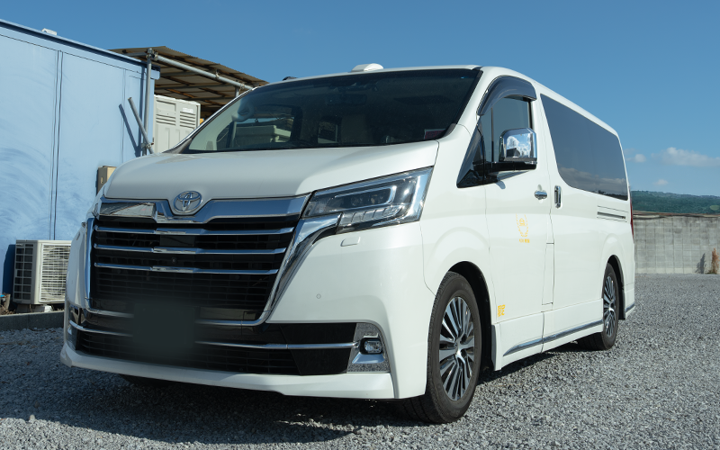
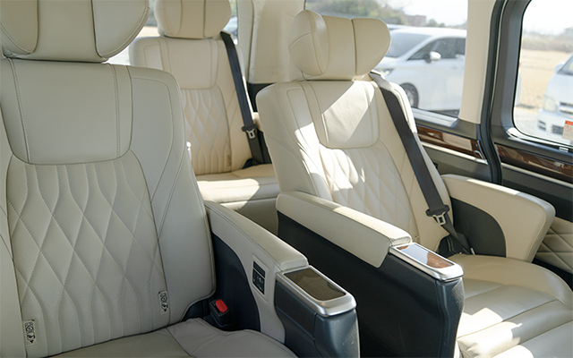
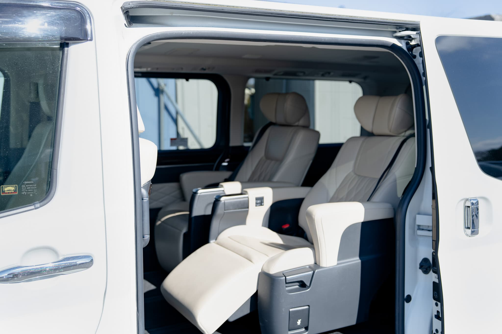

Airport
Airport
Airport Transfers
— Arrive relaxed, every time.
Comfortable door-to-door transfers between Kansai Airport, Osaka Airport, and your hotel or residence in Osaka. Stay connected and get back to work the moment you land.
ASOBI Co., Ltd. offers premium private chauffeur and transfer services throughout Japan. Whether you're exploring with family and friends, travelling for business, or need a seamless transfer to the airport or cruise port — we tailor every plan to suit your needs. Our dedicated staff speak Japanese, English, and Chinese, supporting you from booking right through to your journey. Sit back, relax, and enjoy a truly special experience in Japan.
Premium door-to-door transfers for every journey. We offer tailored plans to suit your schedule and destination.
Airport
— Arrive relaxed, every time.
Comfortable door-to-door transfers between Kansai Airport, Osaka Airport, and your hotel or residence in Osaka. Stay connected and get back to work the moment you land.
— Where public transit can't reach.
From Kobe Port to Osaka Nanko and beyond — we cover destinations that are difficult to reach by public transport. Door-to-door service, no matter how much luggage you have.
 Day Trip
Day Trip
— Japan's highlights in a single day.
Kyoto, Wakayama, Nara and more — explore Japan's most beloved destinations on a private day trip. Our knowledgeable drivers help you make the most of every moment.
— Your schedule, your pace.
Business meetings, shopping, dinner reservations — we build your day around your itinerary. A private city charter tailored entirely to you.
Simply send us a message with your preferred dates, destination, and number of passengers. We're available in English, Japanese, and Chinese.
Our team reviews your request and presents the best plan with a clear quote. Once you're happy, we'll confirm your reservation.
Your driver will be waiting at your specified pickup location. Sit back, relax, and enjoy a smooth, comfortable journey.

Choose the vehicle that suits your group size and itinerary. Child seats are available on request for all vehicles (advance booking required).


18,000 JPY
48,000 JPY
※ Meet & Greet Service 3,000 JPY
View Full Details →


18,000 JPY
48,000 JPY
※ Meet & Greet Service 3,000 JPY
View Full Details →


18,000 JPY
48,000 JPY
※ Meet & Greet Service 3,000 JPY
View Full Details →